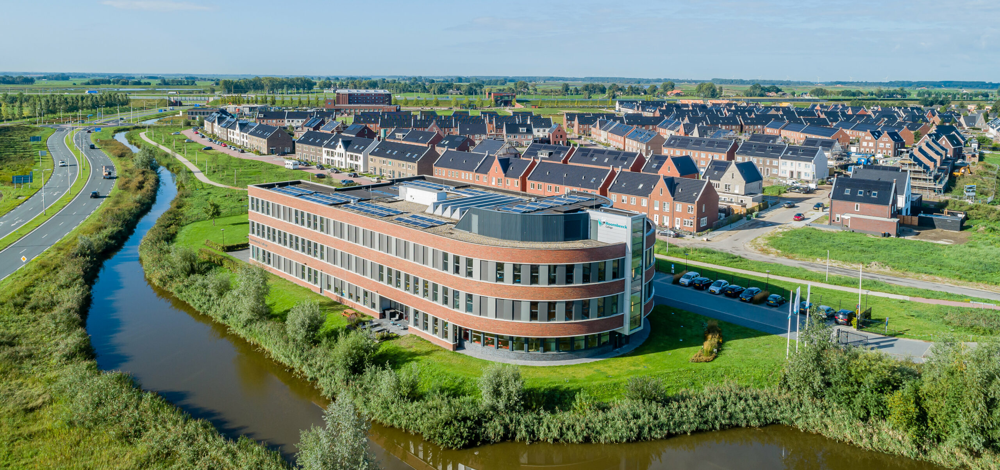
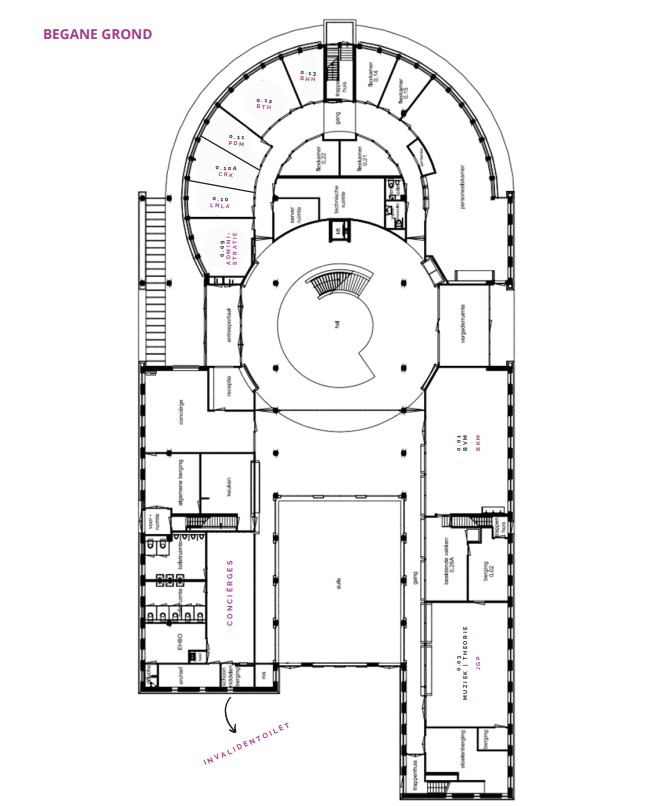
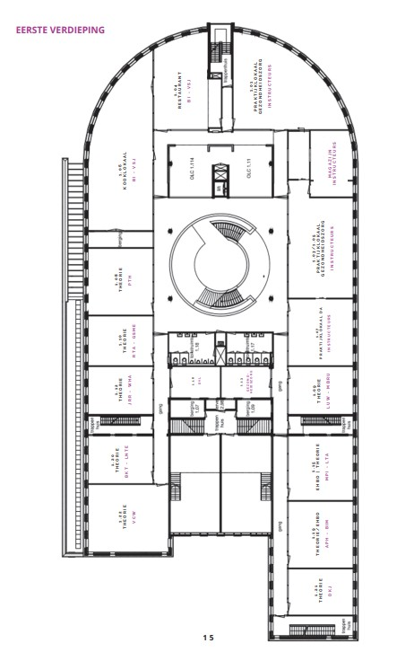
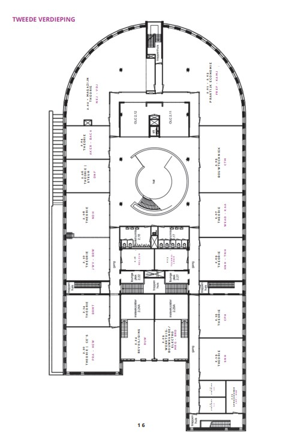
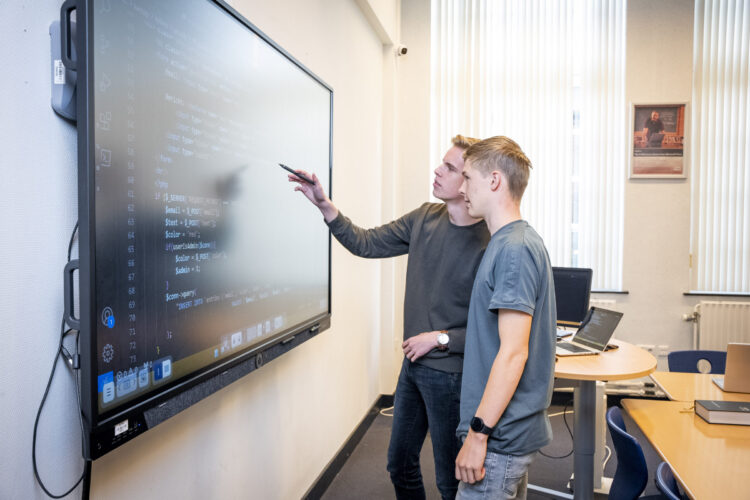
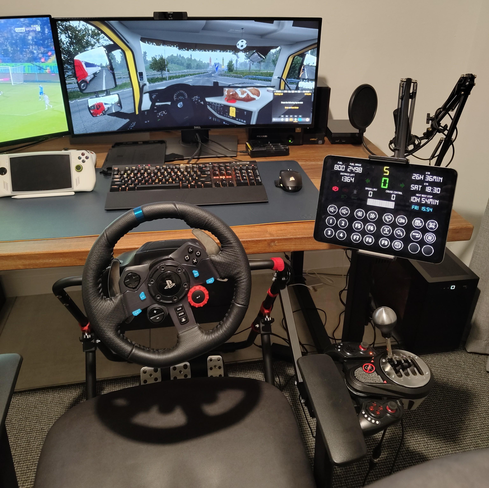

Over het Hoornbeeck
Hoornbeeck College Kampen
Het Hoornbeeck College in Kampen is een christelijk mbo waar geloof en leren hand in hand gaan. De school ligt aan de Willem Hendrik Zwartallee en biedt opleidingen in onder andere zorg, techniek en dienstverlening. Studenten leren er niet alleen een vak, maar ook om hun werk te doen vanuit een bijbelse overtuiging. Met een hechte sfeer, betrokken docenten en oog voor elke student is het Hoornbeeck College in Kampen een plek waar je kunt groeien — zowel in kennis als in geloof.
Ga hier naar de site van het Hoornbeeck College
Informatie ouderavond:
Van harte welkom op deze ouderavond. De studenten willen in deze avond u een blik geven over de opleiding. Zoals u ziet hebben wij allemaal een prachtige website gemaakt om te laten zien wat we geleerd en gemaakt hebben. Op deze website kunt u ook meer informatie lezen over de opleiding, de auteur, en u kunt algemene informatie lezen over het Hoornbeeck College.
Plattegrond Hoornbeeck College
Hieronder ziet u de plattegrond van het Hoornbeeck College.
  Opleidingen
Software Developer
Leren programmeren en applicaties ontwikkelen voor web, desktop en mobiel.
Systeembeheer
Beheer en onderhoud van computersystemen, netwerken en servers.
Support Technician
Specialisatie in bij het helpen en ondersteunen van ICT problemen, op een servicedesk.

Project met medestudent / Website klasgenoten
Project met Bart van der Meer
Voor de presentatie van het project heeft Willem Jonkers deze website gemaakt. Hij laat met behulp van afbeeldingen zien hoe hij dit gemaakt heeft. Naast deze website heeft hij samen met medestudent Bart van der Meer een presentatie gemaakt. Klik hieronder om naar de website van alle medestudenten te gaan.
Website Klasgenoten
Als u het leuk vindt, kunt u ook een kijkje nemen op de website van mijn klasgenoten. het is zeer de moeite waard!
Klik hier om naar de website van de klasgenoten te gaan.